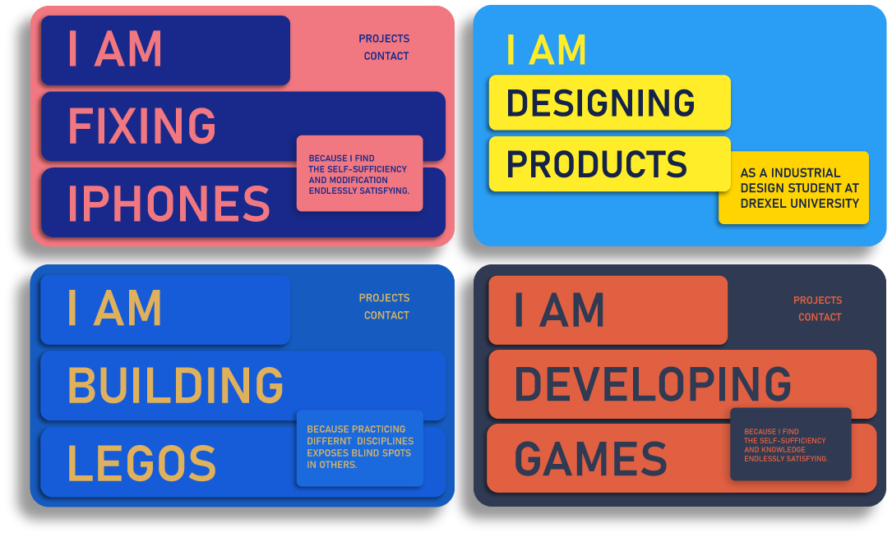

Hey Anthropologie
Team! I'm Mason 👋
I'm a Philly based designer, 3D visualizer, animator, and graphic designer. My primary strength is learning tons of different avenues of digital creation.
I'm excited about this Motion Graphic Designer role because it incorporates a variety of my interests into one position.
I like 2D graphic design and animation, but mixing 3D into these things is what really gets me excited.
Let's get right into it!
These are some animations I've created: This first one was a personal project made to show off my VR
headset model (image to the right). It taught me a lot about camera work within a 3D environment.
The second video is an intro/outro graphic I created for social media. I learned how to quickly
convey information and ideas with this video. I am responsible for all sound and visuals in both
these videos.

This next video was created and rendered in only 12 hours as an interview project.
My task was to create a captivating brand advertisement for an existing one of their products. No materials were provided for this so all textures and models were created by hand within the 12 hours.
A few more videos...
I created this 4th marketing video to showcase a new product release. The majority of my animation
work is done in Blender and After Effects.
The second video here is a playful little experiment with physics objects.
Alongside 3D motion graphics, I do lots of static graphic design and marketing material
One of my greatest strengths is being a bridge between the artistic side and the technical side of
problems.
Below are web banners that showcase more rendering, graphic design, and user interface work. These
two banners are some of my favorite 3D work I've done.
By the way, I wouldn't drink that seltzer -- it's three times your daily recommended dose of
cholesterol.


Additional Projects
Website Design and Development
The project to the right is a website I built for the Drexel Product Design Graduating Class of
2023.
I led the web team in creating a site that gave information about the Thesis Show and brief
introductions to the projects and designers.
This is a fully responsive web page entirely hand coded by myself in HTML, CSS, and JS. The homepage
has some fun motion graphics in the background that I'd recommend checking out.
Color and layout studies for my old portfolio website
A Tangent
My single most valuable skill is learning. I love learning, and I've become very efficient at
teaching myself new things (including every software under the sun)
By far the most exciting thing about Anthropologie for me is the opportunity to learn more.

App and Game Development
I recently started development on my second mobile game. I'm writing the game and engine from
scratch in JavaScript and plan to release it on iOS and Android.
I've been making games as a hobby since middle school -- it's what got me into coding. I've worked
in many different game engines, on many different games -- 2D, 3D, and VR.
Game design has taught me the most out of all my creative endeavors. Right now, it's teaching me how
to manage a larger project than I've ever had to manage before.


Thank You!
That's a brief intro into who I am and what I do. I'd love to meet the Anthropologie team and learn more
about the company. Super eager to hear back!
- Mason Powers